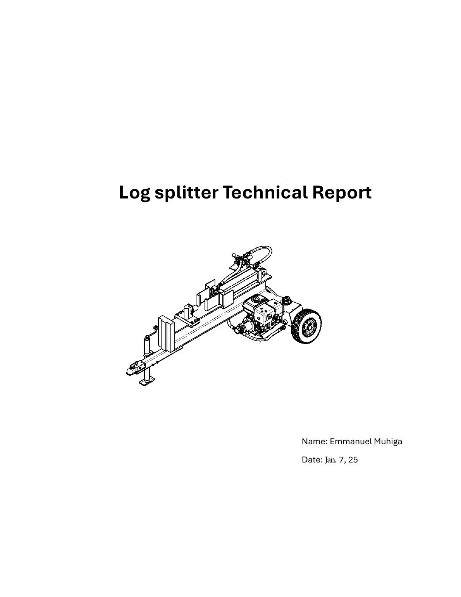
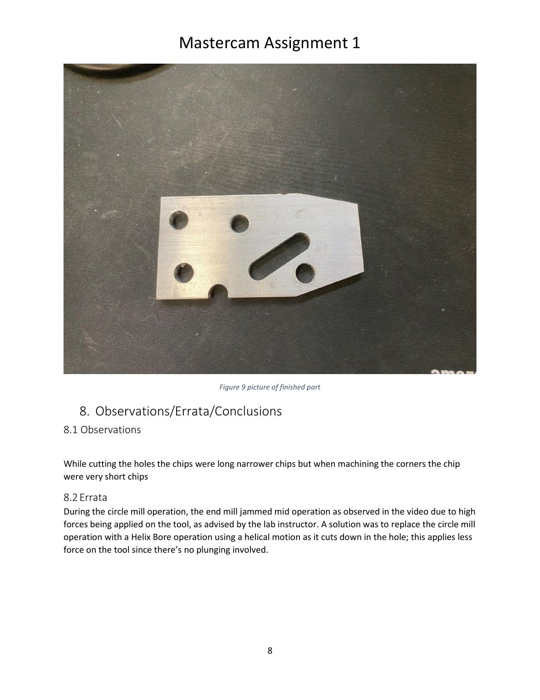
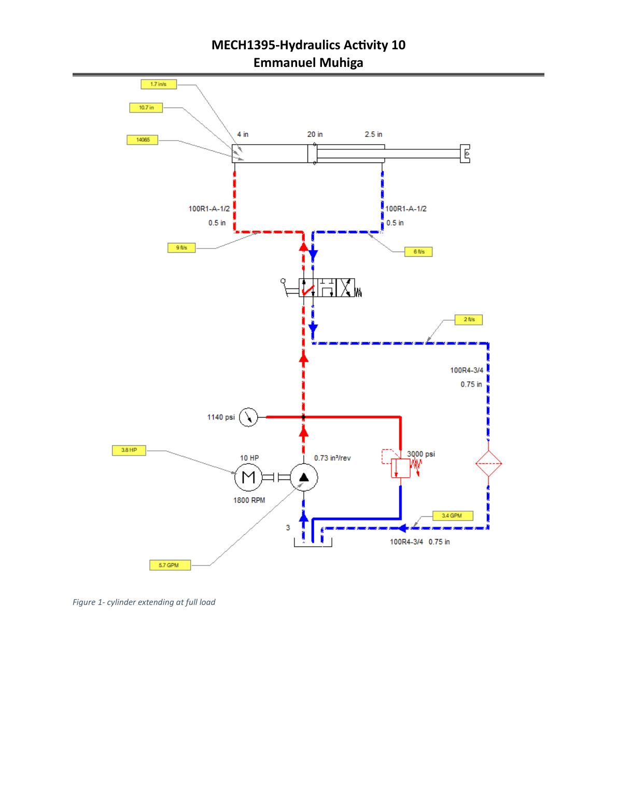
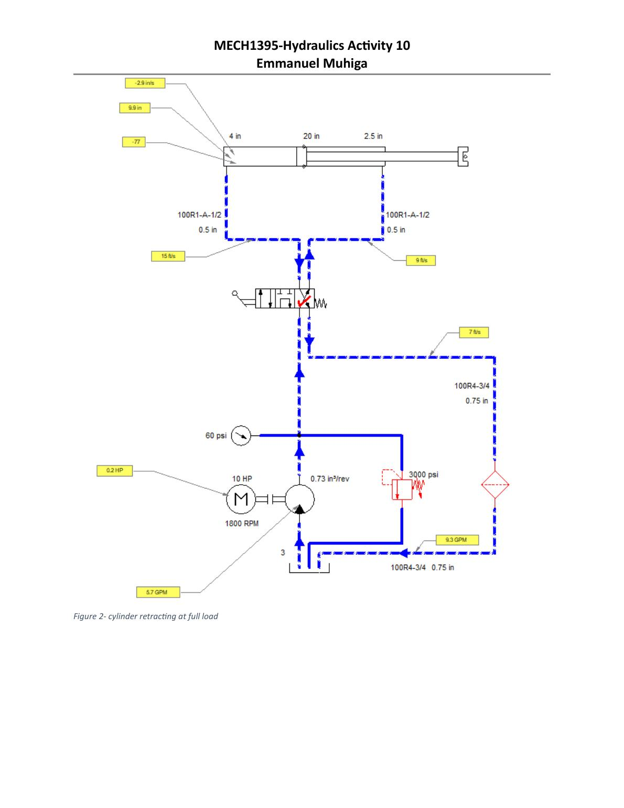

Engineering Portfolio
EmmanuelMuhiga
Mechanical Engineer
DesignAutomationCNCRoboticsProcess Improvement
I design and optimize manufacturing systems, develop automation solutions and improve production processes to deliver measurable results.
01 / SELECTED WORK
Engineering that moves from an idea to a working process.
These projects are organized around the engineering challenge, decisions made, tools used and outcome—not around where they were completed.

01Mechanical Design · Fluid Power · FEA
25-Ton Hydraulic Log Splitter
Developed a towable hydraulic log splitter from concept through detailed engineering design, including power-unit sizing, structural validation, manufacturability and operator safety.
Industrial Robotics · RAPID · I/O
ABB Robot Whiteboard Writing
Programmed a robot to write “MUHIGA,” draw a smiley, pause, erase the board and return to a ready position.
Automation · Gripper Design · Arrays
ABB Robotic Palletizing System
Created flexible load-and-unload logic for a 5 × 4 pallet array and conveyor using a custom gripper.

04CAM Programming · CNC Milling
Mastercam Milling Process
Created and verified toolpaths, generated NC code, machined the part and corrected a high-load circle-milling operation.
Manual Programming · CNC Turning
Tapered Stepped Shaft
Manually programmed and machined a multi-diameter tapered shaft from Aluminum 2011-T3.


Fluid Power · Circuit Analysis
Hydraulic Cylinder Circuit Analysis
Analyzed full-load extension and retraction of a double-acting cylinder, tracing pressure and return-flow paths while calculating force, velocity, pump power and system losses.
Technical capabilities
One engineer across design, manufacturing and automation.
Design & Analysis
Inventor, Creo, SolidWorks, AutoCAD, GD&T, FEA, engineering drawings, BOMs and component selection.
CNC Manufacturing
Mastercam, manual G-code, milling, turning, tooling, offsets, cutting parameters, verification and inspection.
Robotics & Controls
ABB RobotStudio, RAPID, Yaskawa Motoman, FANUC, Allen-Bradley PLCs, RSLogix 5000 and digital I/O.
Process Improvement
Lean, PDCA, 5-Whys, Pareto, Ishikawa, 5S, visual management, work instructions and root-cause analysis.
02 / EXPERIENCE
2024 — PRESENT
Manufacturing Engineer
Champion Moyer Diebel / Bi-Line Systems
Lead manufacturing improvement, equipment reliability, tooling, ECNs and automation-support initiatives. Troubleshoot CNC equipment and robotic welding cells, develop process documentation and implement practical improvements on the production floor.
2022 — 2023
Manufacturing Process Technician
Johnson Electric
Optimized CNC machining through G-code, tooling and offset adjustments; supported Allen-Bradley PLC troubleshooting, automation upgrades, sensor calibration, preventive maintenance and process standardization.
“I clock in knowing there is always another process to understand, another problem to solve and another improvement to make.”
Let’s connect